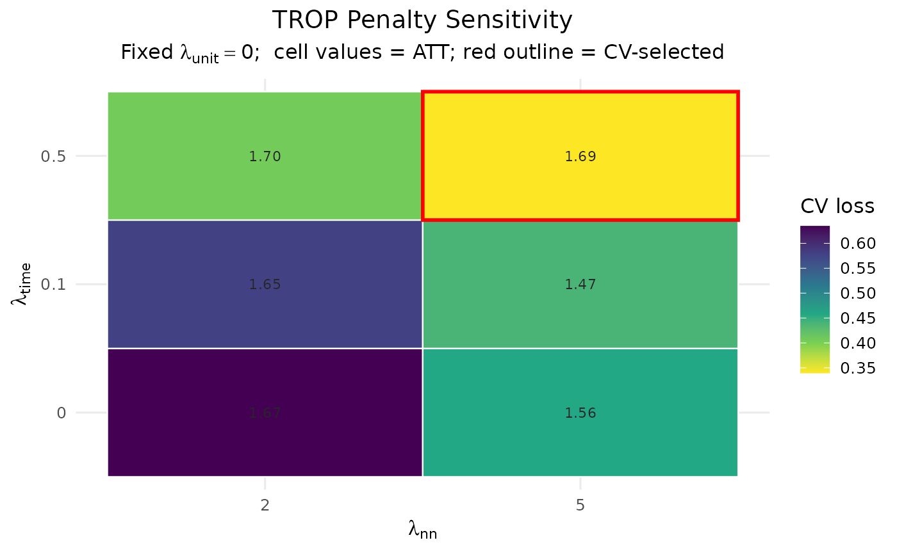
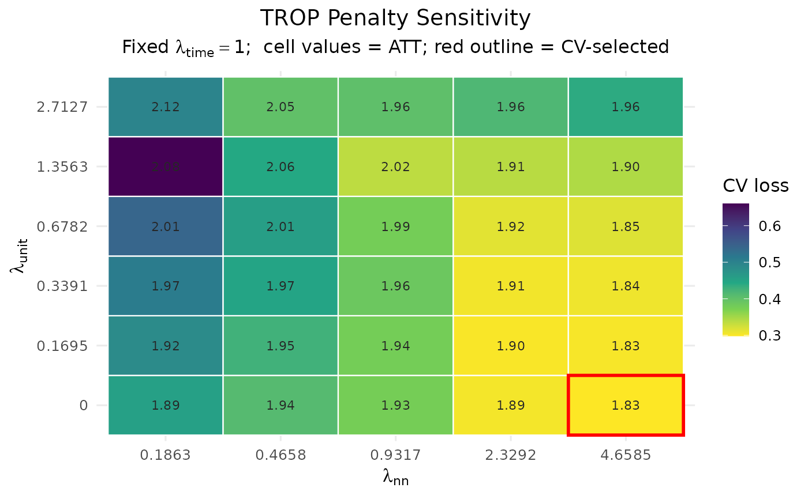

Sweeps any two of the three TROP penalties — \(\lambda_{time}\),
\(\lambda_{unit}\) and \(\lambda_{nn}\) — against each other while
holding the third fixed, and records at each grid point both the resulting
ATT estimate and the leave-one-out cross-validation loss. This is the data
behind the diagnostic heatmap: colour the cells by CV loss to see where the
data-driven choice lands, and read the ATT off each cell to judge how
sensitive the estimate is to the penalties. Use axes to choose which two
penalties go on the x and y axes; the remaining (fixed) penalty is reported
in the heatmap subtitle.
Usage
trop_sensitivity(
data,
outcome,
treatment,
unit,
time,
lambda_time = NULL,
lambda_nn = NULL,
lambda_unit = NULL,
axes = c("nn", "time"),
anchor = "pooled",
control = trop_control(),
seed = NULL,
verbose = FALSE
)Arguments
- data
A long
data.frame, one row per unit-time.- outcome, treatment, unit, time
Column names (strings).
- lambda_time, lambda_nn, lambda_unit
Penalty inputs. For a penalty that is on an axis (see
axes), supply a numeric grid to sweep (orNULLfor a data-driven default grid; thelambda_nndefault keeps only the finite part, as the heatmap axis needs finite values). For the penalty held fixed, supply a single value, orNULLto choose it once by cross-validation and hold it fixed across the sweep.- axes
Length-2 character vector naming the two penalties to sweep, as
c(x, y): the first is the x axis, the second the y axis. Each must be one of"time","unit","nn". Defaults toc("nn", "time")(the historical layout). The third penalty is held fixed.- anchor
Estimation anchor passed to the ATT computation (
"pooled"by default for speed).- control
A list of solver/CV controls from
trop_control().- seed
Optional integer seed for CV-cell sampling.
- verbose
Logical; print progress.
Value
A cf_trop_grid (a data.frame) with columns lambda_time,
lambda_nn, lambda_unit, att, cv_loss. The two swept penalties vary
across rows; the fixed penalty is constant. The grid point minimising
cv_loss (the data-driven choice) is stored in attr(., "selected"), and
the chosen layout in attr(., "axes") (named x/y) and
attr(., "fixed").
Examples
# \donttest{
df <- sim_panel(N = 14, T = 9, n_treated = 3, t0 = 6, att = 2, seed = 1)
g <- trop_sensitivity(df, "y", "w", "id", "t",
lambda_time = c(0, 0.1, 0.5), lambda_nn = c(2, 5),
control = trop_control(n_cv_cells = 5L, cv_cycles = 1L,
tol = 1e-3, seed = 1L))
autoplot(g)

# Sweep the unit penalty against the nuclear-norm penalty instead, holding
# the time penalty fixed (chosen by CV):
g2 <- trop_sensitivity(df, "y", "w", "id", "t", axes = c("nn", "unit"),
control = trop_control(n_cv_cells = 5L, cv_cycles = 1L,
tol = 1e-3, seed = 1L))
autoplot(g2)

# }